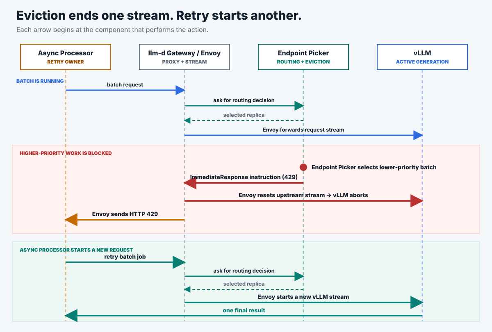

A. Realtime only: latency baseline
Realtime traffic runs alone to establish the comparison point.
342 ms median p95 TTFT- Realtime success
- 3,873 / 3,874
- Batch completed
- 0
- Flow control
- inactive
Can realtime p95 TTFT remain protected while lower-priority batch shares the same GPU?
When realtime demand needs capacity, eligible batch work is evicted and safely retried through the normal request path.
Requests pass through the gateway, the Endpoint Picker, and one vLLM replica on a single H100. Realtime and batch share the same 48-slot concurrency cap. The Endpoint Picker stops running batch streams when higher-priority traffic cannot be admitted.

Batch filled the GPU. Higher-priority traffic arrived with no free slots. Eviction stopped nine batch streams. Running count fell from 48 toward zero as those jobs wound down. The chart covers one measured clear-out.
With 25% reserved, three higher-priority requests received HTTP 429 (two in a burst, one with long prompts). With 50% or 75% reserved, none were turned away.
50% reserve had the lowest median higher-priority TTFT. No batch streams were stopped in those runs.
Three repeats compared eviction off and on at 25% reserve. All stopped requests retried to completion. Median TTFT was lower with eviction on in two runs and higher in one.
When a request is stopped, the work it had already done is thrown away and has to be redone. Longer prompts mean more work thrown away each time.
Every counted run passed the evidence gate. Values are as measured; units are in each column header. Expand a test to see its table.
matched-treatment-eviction-on-v2-r1 · sampled every ~0.1 s · showing the reclaim window
| Elapsed (s) | vLLM running (req) | EPP saturation (fraction) | Revocations issued (cumulative) | Phase |
|---|---|---|---|---|
| 0.6 | 0 | 0.10 | 0 | batch ramping |
| 1.8 | 37 | 0.77 | 0 | batch filling slots |
| 2.3 | 44 | 1.00 | 6 | saturated · revocations begin |
| 2.9 | 48 | 1.00 | 9 | fully saturated |
| 3.1 | 28 | 0.65 | 9 | reclaim confirmed |
| 6.4 | 26 | 0.54 | 9 | draining |
| 6.5 | 3 | 0.06 | 9 | capacity freed |
| 7.1 | 0 | 0.00 | 9 | idle |
Saturation = in-flight load ÷ max concurrency (48). Revocations = EPP-issued evictions of negative-priority batch. Full series is 100 samples over ~13 s. Source: runs/matched-treatment-eviction-on-v2-r1/targeted_metrics.csv.
Medium prompts · each row is the median of 3 gated runs · 48 concurrent slots
| Operating point | Slots reserved | p95 TTFT median (ms) | p95 TTFT min (ms) | p95 TTFT max (ms) | p95 TTFT range (ms) | p95 TTFT stdev (ms) | p95 TPOT median (ms) | Batch p95 e2e median (ms) | Evictions (count) | Recomputed tokens (count) | Max queue (median) | TTFT vs eviction-off (%) |
|---|---|---|---|---|---|---|---|---|---|---|---|---|
| 75% · eviction off | 12 | 1,350.3 | 831.7 | 1,685.2 | 853.5 | 430.0 | 12.0 | 8,507.2 | 0 | 0 | 12.0 | 0.0 |
| 75% · eviction on | 12 | 1,054.6 | 441.8 | 1,554.0 | 1,112.2 | 557.1 | 25.9 | 12,244.6 | 25 | 9,076 | 5.0 | −21.9 |
| 50% · eviction on | 24 | 966.9 | 946.2 | 1,437.5 | 491.3 | 277.9 | 26.3 | 9,422.0 | 0 | 0 | 16.0 | −28.4 |
| 25% · eviction on | 36 | 1,018.7 | 948.7 | 1,044.0 | 95.3 | 49.4 | 11.8 | 14,925.4 | 0 | 0 | 28.0 | −24.6 |
TTFT = time to first token · TPOT = time per output token · e2e = end-to-end · slots reserved = 48 − batch ceiling. Source: analysis/headroom-sweep.csv.
Identical config per pair · all runs valid, config-matched, and image-matched
| Pair | Valid | Control (off) p95 TTFT (ms) | Treatment (on) p95 TTFT (ms) | Difference (ms) | Change (%) |
|---|---|---|---|---|---|
| R1 | yes | 1,685.2 | 1,054.6 | −630.7 | −37.4 |
| R2 | yes | 1,350.3 | 1,554.0 | +203.8 | +15.1 |
| R3 | yes | 831.7 | 441.8 | −389.9 | −46.9 |
Aggregate: median control 1,350 ms; median treatment 1,055 ms; 25 evictions, all retried successfully; 9,076 tokens recomputed or unreturned; slowest issue-to-vLLM-abort p95 = 5.2 ms. Source: analysis/matched-pairs.csv.
13 audited waves · priority-100 realtime vs priority-−10 batch · all requests completed
| Series | Realtime completed (req) | Batch completed (req) | Evictions (count) | Realtime p95 TTFT median (ms) | Realtime p95 TTFT range (ms) |
|---|---|---|---|---|---|
| 75% ceiling · medium prompts · Poisson 100 RPS · 5 waves | 100 / 100 | 200 / 200 | 40 | 481 | 445 – 1,386 |
| 50% ceiling · medium prompts · simultaneous burst · 5 waves | 100 / 100 | 200 / 200 | 0 | 1,078 | 626 – 1,590 |
| 50% ceiling · long batch prompts · Poisson 100 RPS · 3 waves | 60 / 60 | 120 / 120 | 0 | 1,175 | 1,027 – 1,351 |
Across all three: 260/260 realtime and 520/520 batch completed; 40/40 evictions matched a vLLM abort; 40/40 evicted jobs completed after bounded retry; prefix-cache deltas zero; 0 pod restarts. RPS = requests per second. Source: README.md.
Tokens recomputed or lost on client retry
| Scenario | Validity | Tokens recomputed / lost (count) |
|---|---|---|
| Matched-pairs series (eviction on) · aggregate | valid evidence | 9,076 |
| Valid 5-wave series · medium prompts · 75% ceiling | valid evidence | 15,280 |
| One failed wave · long-context prompts · 75% ceiling | negative evidence | 21,814 |
Eviction returns a terminal 429; the router does not requeue, so this work is recomputed by the client's bounded retry. Source: README.md, analysis/matched-pairs.md.
| Layer | Setting |
|---|---|
| Hardware | 1× H100 · one model-server replica |
| Model | GPT-OSS 20B |
| Serving stack | RHAI 3.4 vLLM · max-num-seqs=96 · max-num-batched-tokens=8192 |
| Router | Experimental llm-d-router build · flowControl.enableEviction: true |
| Max concurrency | 48 requests |
| Batch ceilings tested | 75%, 50%, 25% |
| Priorities | realtime 100 · standard 0 · batch −10 |
| Prefix cache | Off (query and hit deltas zero) |
| Arrival patterns | simultaneous burst · open-loop Poisson |
Source: README.md fixed-configuration table. Every counted run required all metrics present or it did not start.
Each scenario changed one protection setting.
Realtime traffic runs alone to establish the comparison point.
342 ms median p95 TTFTBatch starts first and can use all available request capacity.
561 ms median p95 TTFTCapacity is kept available for realtime before batch is admitted.
341 ms median p95 TTFTCapacity is reserved for realtime. If demand rises, eligible batch work can be evicted and safely retried.
348 ms median p95 TTFTRealtime p95 time to first token
Reserved capacity returned median p95 TTFT to the realtime-only level.
38 evicted requests retried; 5,376 batch jobs finished with zero duplicate results.
More reserve reduced HTTP 429s and lowered batch throughput. Request-count admission missed large-prompt pressure.
Abrupt surge: reserved capacity
More reserved slots removed realtime rejections and reduced batch jobs completed.
Reserved slots = maxConcurrency 48 minus Async concurrency.
Large prompts: request-count blind spot
TTFT rose before request-count admission engaged.
Tests covered 75% and 50% batch ceilings across mechanism, production, and matched-proof phases.
Claims below passed the evidence gate for the single-replica build.
Every column names its metric and unit; every accepted run remains visible.